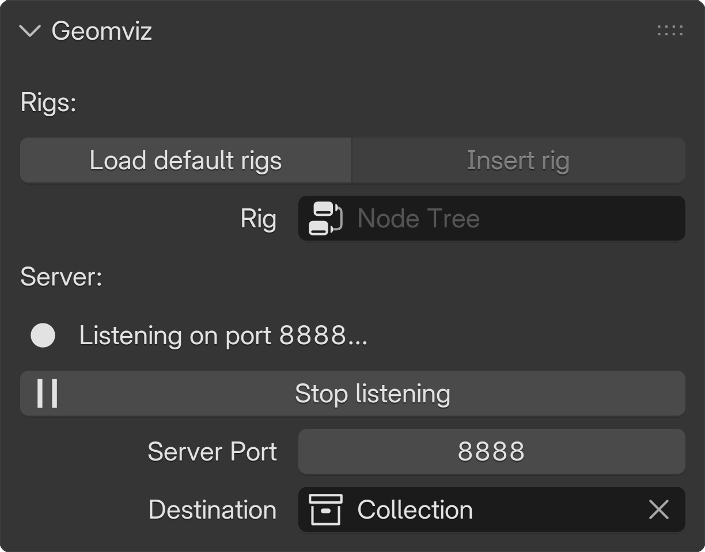
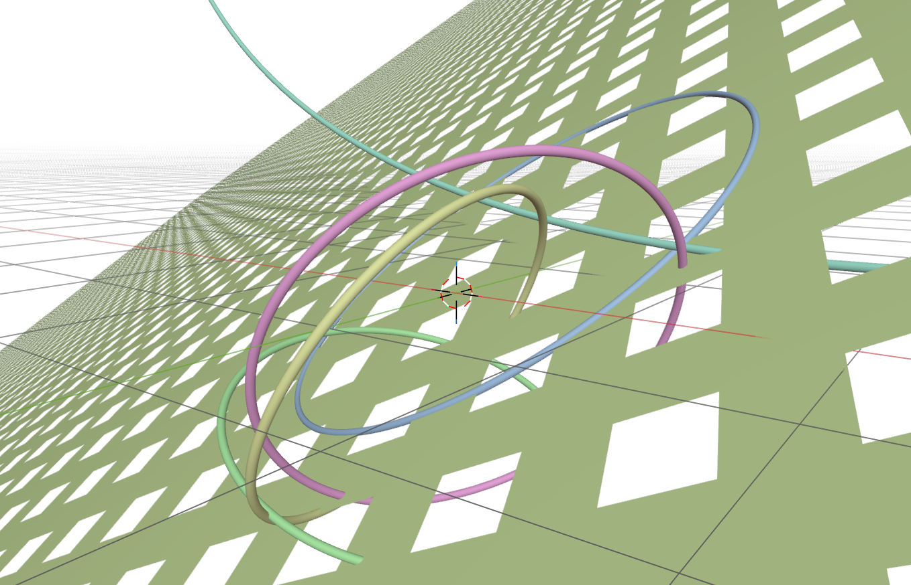
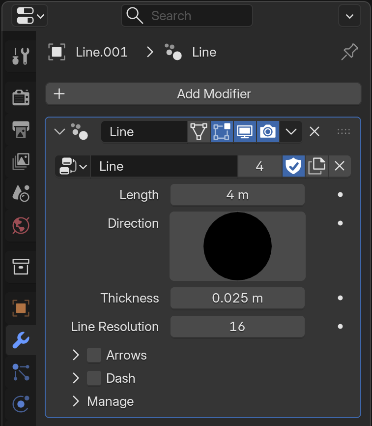
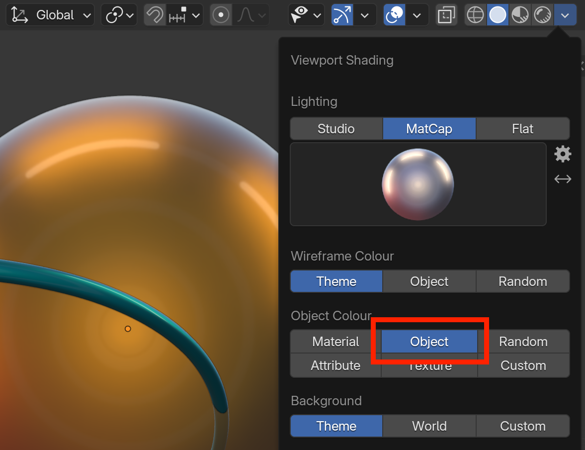

Visualisation with Blender
The Geomviz plugin for Blender may be used visualise, animate and render geometric objects created with GeometricAlgebraModels.jl.
GeometricAlgebraModels.jl includes a package extension which loads when the Geomviz.jl client is loaded. The Julia client talks to the Geomviz Blender plugin and, and the package extension defines how geometric objects are transformed into "rigs" which get displayed in Blender.
A simple example scene
Let's create a few random object in CGA:
using GeometricAlgebra, GeometricAlgebraModels.Conformal
circles = [wedge(up.(randn(Multivector{3,1}, 3))...) for _ in 1:5]
plane = first(circles) ∧ infinity()Then, make sure the Geomviz plugin is installed, and navigate to the Properties > Scene > Geomviz panel.
- Load the default rigs. (If the rigs aren't loaded, you will get "unknown rig" errors later.)
- Start the server and ensure it is listening on the same port as
Geomviz.PORT.

Then, with Geomviz loaded in the Julia REPL, we can send the objects to Blender by pressing space at the start of the prompt or by calling geomviz().
Hopefully, you should now see a scene similar to this in Blender's 3D viewport:
julia> using Geomviz
geomviz> circles, plane # press space to enter geomviz REPL mode
julia> geomviz(circles, plane) # alternatively, pass objects to the plotting function
In the image above, the Viewport Shading settings had Object Colour set to Random.
Object persistence
Each time you call geomviz() or enter something in the geomviz> REPL, the Blender scene is emptied and repopulated; objects do not persist. If you want objects to stick around, you can store them in a vector and pass that to geomviz(), adding or removing objects as wanted. Alternatively, you can write a script or function that creates objects and calls geomviz() at the end on a collection of all the objects at once.
More about rigs
Objects in Julia must be converted into Geomviz.Rigs before being sent to Blender as serialised data. When the Blender Geomviz plugin receives this data, it instantiates a Rig object in the destination collection configured in Properties > Scene > Geomviz.
Rigs in Blender are shapes with configurable properties. You can see a Rig's properties by selecting the object in Blender and navigating to Properties > Modifiers. For example, the built-in "Line" rig as "Length", "Direction", "Thickness" and "Line Resolution" properties, and even properties related to displaying arrow heads and dashes:

In addition to rig properties (like "Radius"), Rigs also have object properties (like location, color and show). Object properties are not specific to the rig, but are properties of any Blender object.
Rig properties are passesed as string–value pairs "Prop"=>val in Julia, while object properties are keyword arguments key=val. For example, notice the difference between how the position and radius are specified:
Rig("Point", location=(1,2,3), "Radius"=>0.02)Color
A rig's object color can be set using the color object property. For example, the following displays the point one unit above the origin in orange:
geomviz> Rig("Point", location=(0,0,1), color=(1,0.5,0,1))Colors must be specified as (r, g, b, a) tuples, or if the Colors package is loaded, as any Colorant:
julia> using Colors
geomviz> Rig("Point", color=colorant"orange")
geomviz> Rig("Point", color=HSV(40, 0.8, 1))For object colors to be visible in Blender's 3D viewport, you must ensure that the Shading > Object Color setting is set to Object.

Applying styles to objects
You can wrap objects in Styled to set rig properties of all of them at once. This also allows you to set properties of Julia objects that have not yet been converted into a Geomviz.Rig, such as geometric algebra objects. For example,
julia> using GeometricAlgebraModels.Conformal
julia> point_pair = up(1, 0, 0) ∧ up(0, 0, 1)
geomviz> Styled(point_pair, color=colorant"orange")For example, here we set the "Radius" and "Resolution" (controlling the number of vertices in the UV sphere mesh) properties of a set of Sphere rigs:
julia> rigs = [Rig("Sphere", location=randn(3)) for _ in 1:5]
geomviz> Styled(rigs, "Radius"=>0.5, "Resolution"=>2)